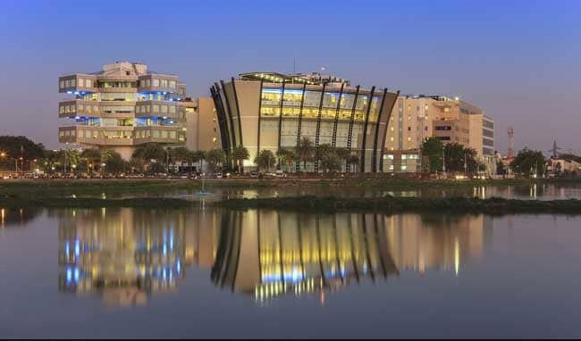
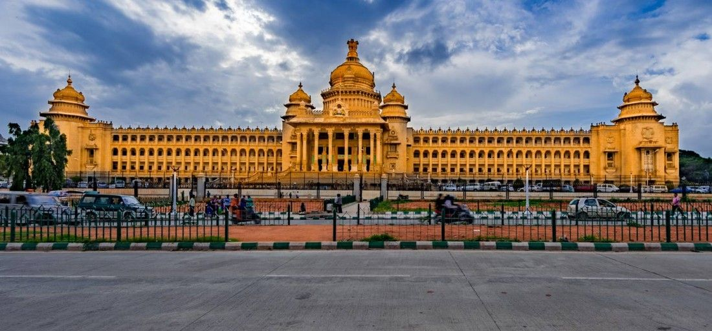
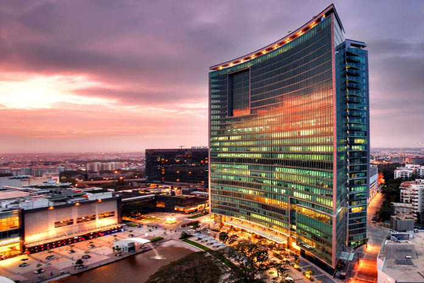
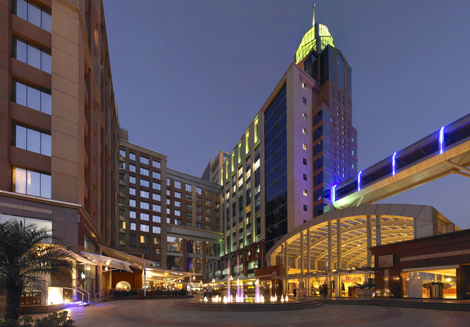
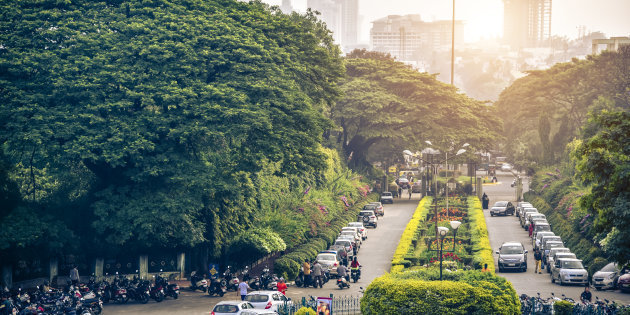
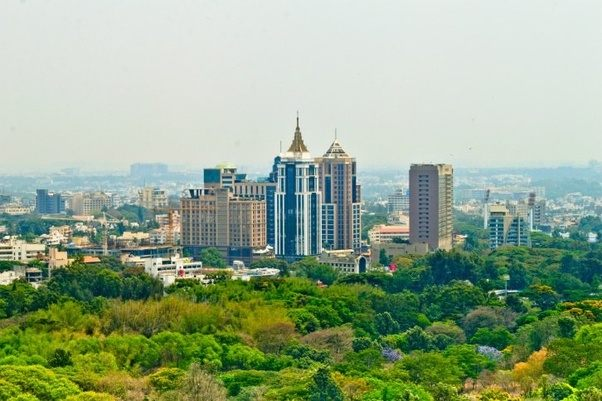

Every patient across the globe has a right to seek the highest level of quality medical treatment at the most affordable cost, no matter whether they have to travel abroad for it. India has evolved to become one of such top-notch medical tourism destinations which boasts to provide affordable yet qualitative treatment, thus scoring high on several aspects, including patient satisfaction, quality hospitals and renowned doctors to name a few.
Medical tourism in India has grown tremendously in the last few years. The current medical tourism industry in India is estimated to be worth $3 billion and is expected to grow by another $4 - $5 billion in the next three years.
Almost two hundred thousand patients travel to India each year to seek medical care. Total hip arthroplasty, knee replacement, heart bypass, coronary artery bypass grafting (CABG) and liver, kidney, and heart transplant are some of the popular and life-saving procedures for which medical tourists visit India.
High quality of medical services and affordable cost of medical treatment in India are the two leading reasons behind the boom in healthcare tourism in the country. A large majority of inbound medical tourists to India are from Bangladesh and Afghanistan (34%), Russia and Commonwealth of Independent States (30%), the Middle East, (10%), Africa (10%), and the UK and the US (16%).
Medical tourism companies in India help foreign patients seek affordable treatment at some of the best hospitals in India, which are located across the length and breadth of the country. New Delhi and NCR, Hyderabad, Mumbai, Bangalore and Chennai are some of the top Indian destinations that receive highest number of medical tourists each year.